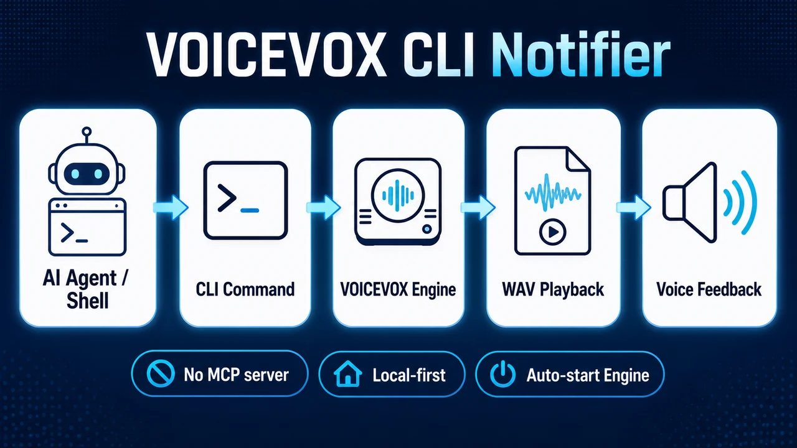
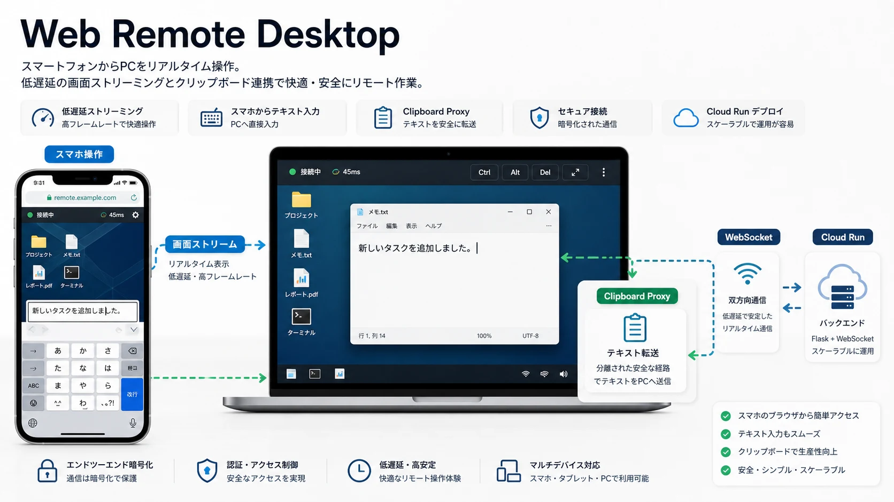

データ可視化・分析プロジェクト
AI Agent Runtime Flow
NEW
新規パネル: AI内部ワークフロー監視 / Runtime Flow
複雑なAIエージェント内部処理を、Intent Parser / Planner / Retriever / Tool Selector などの依存関係・遅延・失敗から監視するv9版ダッシュボード。既存の実行トリアージとは別に、実行中のAI内部コンポーネント健全性、異常イベント、根本原因候補に絞って確認できる。
Agent Trace Triage
NEW
既存パネル: 実行ログの失敗原因トリアージ
AIエージェント実行後のトレース、スパン、ツール呼び出し、評価結果、ログを一画面で確認し、失敗原因と次の確認手順を切り分ける既存ダッシュボード。Runtime Flowとは別に、public-safeなサンプルデータで誤判定やfalse OK/false FAILを防ぐ運用トリアージ設計を示す。
Cloud Market Racing Chart
LIVE
2026 Q1までのクラウド市場シェアをTop 5で可視化するCanvasレーシングチャート。 AWS / Azure / Google Cloud / Oracle / Alibabaの推移に加え、 Google CloudのAI需要による伸びやNeocloudsの補足インサイトも確認できます。
市場指数チャート

SP500とFANG+指数の価格推移を同時に可視化。Cyberpunk Matrix風とSynthwave Retro風のデザインで、 日次・週次・月次の時間軸切り替え機能を実装。Chart.jsによるリアルタイム更新とCSS3アニメーション。
Flowchart Hover Viewer

Mermaid.jsフローチャートをホバーで詳細表示できるインタラクティブビューワー。 ノードにマウスオーバーで説明パネルが表示され、ドラッグ操作でレイアウト切り替えも可能。 Glassmorphism UIによる美しいダークテーマを採用。単一HTMLファイルでオフライン動作。
AI導入分析レポート

経産省・日銀・McKinsey・BCG等の公的データに基づく、日本企業のAI導入成功vs失敗ケーススタディ分析。 三菱UFJ・パナソニック等の実在企業事例と、投資配分・ROI比較を37枚のインタラクティブスライドで可視化。 McKinsey/BCGレベルのコンサルティング資料デザインを再現。
AIツールトレンド分析

Artificial Analysisの盲検ユーザー投票Elo、公式情報、npm downloads APIの日次中央値を使い、GPT Image 2やSeedance 2.0を含む 画像生成AIサービス・動画生成AIサービス・AIコーディングエージェントCLIを比較。HF downloadsや月間合計スパイクだけに偏らない サービス/配布CLI単位のランキング。
Gemini 3 SEO環境分析

Gemini 3登場後のSEO環境変化を可視化したインタラクティブスライド。 検索クエリの変化、コンテンツ戦略の転換、技術的SEO要件の進化を アニメーション付きグラフとチャートで解説。
インタラクティブ分析ダッシュボード

AI駆動によるフロントエンド開発によって独自のBIイメージを作成。 デザインコンセプトからの実装経験を活かし、 本格的なビジネスインテリジェンスツールとしての実用化にも対応可能。
データ分析基盤構築
Production
SageMaker、Snowflakeを活用したエンドツーエンドの分析基盤。 顧客セグメンテーション、売上予測モデルを統合し、 効率的なデータ分析ワークフローを構築。
AI駆動開発プロジェクト
AI Buzz Extractor

X.comからAI関連のバズツイートを自動収集・分析するリアルタイムダッシュボード。5つのドメイン（AI開発ツール・AI創作物・AIモデル・AIニュース・AIナレッジ）にClaude AIが画像認識を含めて自動分類。いいね・RT・引用・リプライを基にしたエンゲージメントスコア（Twitter公式アルゴリズム準拠）でランキング表示。ブックマーク・既読管理・期間フィルタリング機能を搭載。4時間毎の自動更新でAI業界のトレンドをリアルタイムで把握できます。
AI Integrated Sound Platform

Claude Code Maxプラン活用による100%個人開発の音楽・ポッドキャスト配信プラットフォーム。Firebase AuthenticationとCloud Firestoreによるユーザー管理から、プレイリスト・フレンド登録・音楽トラックのシェア機能など包括的なユーザー体験を提供。Progressive Web App技術によるオフライン再生対応、レスポンシブデザイン・ダークモードでデザインされたUI/UXを提供。SUNO AIで作成したAI音楽もシェア機能を追加予定。
7-Agent Parallel
Code Review

複数の専門AIエージェントが並列実行し、多角的にコードを分析するレビューツール。 3つのモード（Standard 7エージェント/Full 12エージェント/Release 17エージェント）で セキュリティ・コード品質・パフォーマンス・UX・アクセシビリティ・ストアガイドライン準拠まで 包括的に検証。Critical/Important/Suggestionsの優先度付き指摘と数値スコアリングで 具体的なファイル・行番号を含む実用的なフィードバックを提供。
Codex Session Kanban

長いAIコーディングセッションを、重複排除されたレビュー可能なタスク候補へ変換する静的Kanbanレビュー画面。 実ログはローカルに残し、ポートフォリオでは公開可能な概要とスクリーンショットのみを提示。 意図優先抽出・履歴リンク・人間の判断ロックにより、AI作業の棚卸しと次アクション判断を支援。
Gmail Triage Assistant Proof

メール風の入力を分類し、理由説明・返信下書き・人間確認キューへ振り分けるAI秘書の安全設計proof。 Gmail APIや実メールに依存せず、合成fixtureで下書きのみを生成。 外部送信の前に人間確認を置くHuman-in-the-loopパターンを示す。
AI Screen Capture Tools

ターミナル上のAIエージェントが現在画面を確認できるようにするWindows/Python向け画面キャプチャツール群。 全画面取得、4分割クロップ、スクリーンショット整理をCLIで実行し、 UI確認やエラー共有をAIフレンドリーなローカル証拠に変換。
VOICEVOX CLI Notifier

VOICEVOX APIとNode.jsで、AIエージェントやシェルから短い進捗・完了メッセージをずんだもんの声で通知するCLIツール。 追加の通知サーバー設定なしで実行でき、WindowsではVOICEVOX Engineの自動起動にも対応。 公開版は実験要素を除いたclean history repoとして整理。
Claude Code Hook
自動化システム

Claude Code のイベント駆動型Hook機能を活用した完全自動GitHub Issue報告システム。 SessionEnd HookとToolResult Hookにより、タスク完了・ツール実行を自動検知し、 GitHub Issue #1へリアルタイム報告を投稿。Node.jsとPythonの連携により、 ユーザーの手動指示なしで自動化ワークフローを構築。 開発プロセスの追跡可能性と継続的なドキュメント化に対応。
Claude Skills
Scheduled Execution

Claude Code SkillsをTask Scheduler（Windows）やcron（Mac/Linux）で定期実行するスターターキット。 Claude Pro/Maxサブスクリプションを活用し、追加API課金なしでAIエージェントを自動実行。 クロスプラットフォーム対応、シンプルなセットアップ手順、セキュリティ考慮事項も完備。 日次レポート生成、定期データ収集、自動メンテナンスタスクなど多様なユースケースに対応。
Zenn Article Audio Reader

Zenn投稿記事を高品質音声で朗読するWebアプリケーション。 Google Cloud TTS（Neural2音声）とVOICEVOXによる自然な音声合成、 チャンク分割による長文対応、再生速度調整・シーク機能を実装。 GitHub Pagesで配信し、複数記事のプレイリスト再生に対応。 レスポンシブデザインでモバイル・デスクトップ両対応。
Web Remote Desktop

スマートフォンからPCのリアルタイム画面表示とテキスト入力ができるリモートデスクトップシステム。 Cloud RunにデプロイしたFlaskバックエンド + WebSocketで低遅延ストリーミングを実現。 スマホのブラウザから任意のテキストをPCにペーストできるClipboard Proxy機能搭載。 外出先からPCを操作するユースケースに対応。
Claude Code Hooks System

Claude CodeのStop/UserPromptSubmit hooksで、テスト丸投げ・根拠のない完了宣言・低シグナルなワークフロー逸脱を検出してblockする品質ガードレール。Windows + PowerShell環境に最適化し、テスト誘導・ドキュメント文脈注入・ローカル記録でAIコーディングの安全性と自律性を高める。
Review Fix Pipeline

意図先読み型コードレビュー + 自動修正ループ。独立したサブエージェントコンテキストで自己レビューバイアスを構造的に排除し、レビュー→修正→再レビューを最大5ループ自動実行。CriticalからSuggestionまで優先度別に整理されたフィードバックと数値スコアで品質を定量化。
Claude Review PDCA

コードレビュー指摘をSQLiteに保存し、実装時に関連ファイルへ再注入するclosed-loop PDCA。Claude Code hook modeとCodex/manual modeの両方に対応し、過去の指摘・判断・学習パターンを必要なタイミングで戻すことで、同じミスの再発とレビュー知見の埋没を防ぐ。
Doc Freshness Analyzer

READMEやdocsの記載を実コード・repo構造・exports・routes・設定ファイルと照合し、古い手順や存在しないファイル参照、バージョン不一致を検出するドキュメント鮮度チェックツール。CIやPRレビューで使える修正候補つきレポートを生成。
Agent Workflow Reliability Dashboard

既存パネル: 作業ワークフロー信頼性設計の説明
AIエージェント開発ワークフローを、受付・計画・実行・評価・レビュー・改善の流れで説明するpublic-safeな静的ダッシュボード。Runtime Flowのような内部コンポーネント監視ではなく、eval、traceability、rollback、レビュー境界を可視化し、AI運用設計をポートフォリオ上で説明可能にする。
Claude Worktree Parallel Dev

Claude Codeの実装・コードレビュー・UI検証をGit Worktreeで物理的に分離し、並列に進める開発ワークフロー。main作業、レビュー専用worktree、UI検証専用worktreeを分けることで、レビュー待ち・競合・目視確認漏れを減らす。
X Bookmark Knowledge Pack

Xブックマークのエクスポート/抽出データを、ローカルで閲覧できる静的ギャラリーとAIエージェント投入用JSONに変換する知識パック生成ツール。公開版はサンプルデータと匿名化・sanitize前提で、個人データを出さずに再利用導線を示す。
Hugging Face Daily Insights API

Hugging Faceモデル、arXiv AI/ML論文、LMArenaランキングを日次スナップショット化し、CSVリリース・静的ダッシュボード・APIで参照できるデータパイプライン。上流が保持しない履歴データを時系列で追えるようにする。
Meeting Prep Assistant Proof

会議サンプルを準備状況で分類し、不足アジェンダ・確認事項・事前ブリーフを作るAI秘書proof。カレンダー更新や参加者送信は行わず、外部アクションは人間確認キューへ置くため、公開版でも安全境界を説明しやすい。
Support Ticket Triage Proof

サンプルの問い合わせチケットを緊急度・返信要否・保留理由で分類し、返信下書きと人間確認キューを出力するAI秘書proof。外部チケットシステム更新や通知送信を行わないため、support intakeのHITL設計をpublic-safeに示せる。
Daily Decision Assistant Proof

日次シグナルをスコアリングし、今日やる・保留・やらないに分けるAI秘書proof。メール、カレンダー、タスク管理ツールへ直接書き込まず、意思決定理由と確認キューを先に出すことで、自律実行前の安全な優先順位付けを示す。
業務自動化・Webスクレイピング
FAQデータベース検索システム
Development
RAG（Retrieval-Augmented Generation）技術を活用したFAQ検索システム。 過去の問い合わせデータをベクトル化し、自然言語での質問に対して最適な回答を提示。 問い合わせ対応時間を削減。開発ナレッジをドキュメント化し現場展開。
デイリータスク自動化スイート
Production
日常的なデータ処理、レポート生成、ファイル管理を自動化するPythonスクリプト集。 Excel処理、メール送信、ファイル同期等の実務タスクを効率化。 GitHub Actionsによるスケジュール実行で自動化。
マルチサイト情報収集システム
Active
複数のWebサイトから情報を自動収集・分析するスクレイピングシステム。 BeautifulSoup、Seleniumを活用し、動的コンテンツも対応。 収集データをLLMで自動分類・要約し、構造化された情報として出力。
AI創作プロジェクト
作業用MV制作
Suno AIで楽曲制作、Midjourneyでビジュアル生成、Canvaで動画編集を行ったオルタナティブロックトラック。 AI生成ボーカルとAI制作による楽曲の組み合わせです。 複数のAIツールを駆使した、クリエイティブワークフローの実践例としてもご覧いただけます。
Media Portfolio - AI Video Gallery
Kling AI Image to Video技術で生成したAI動画作品を展示するメディアポートフォリオ。 漆黒から青みがかった黒へのグラデーション背景、ゴールド・ブラウン系のアクセントカラーで 高級感のあるギャラリーデザインを採用。AI生成動画の可能性を視覚的に表現。
Webデザインプロジェクト
エディトリアルギャラリー

雑誌のような洗練されたエディトリアルデザインを採用したWebギャラリー。 Bodoni Modaセリフフォント、大胆なタイポグラフィ、全画面プロジェクトセクション、 視差スクロール効果により、印刷物のような高級感を表現。 各プロジェクトに専用の背景画像とアニメーション効果を配置し、 ポートフォリオサイトに適したビジュアル表現を追求。
ネオンブルー

2130年のネオン輝く東京を舞台にしたサイバーパンクアニメのランディングページ。 ネオンブルー(#00f3ff)・ネオンピンク(#ff006e)のグラデーション、 パーティクルアニメーション、グリッチエフェクトによる近未来的な演出。 Canvas API実装のパーティクル背景、スムーススクロール、 レスポンシブデザインにより、サイバーパンク世界観を完全再現。